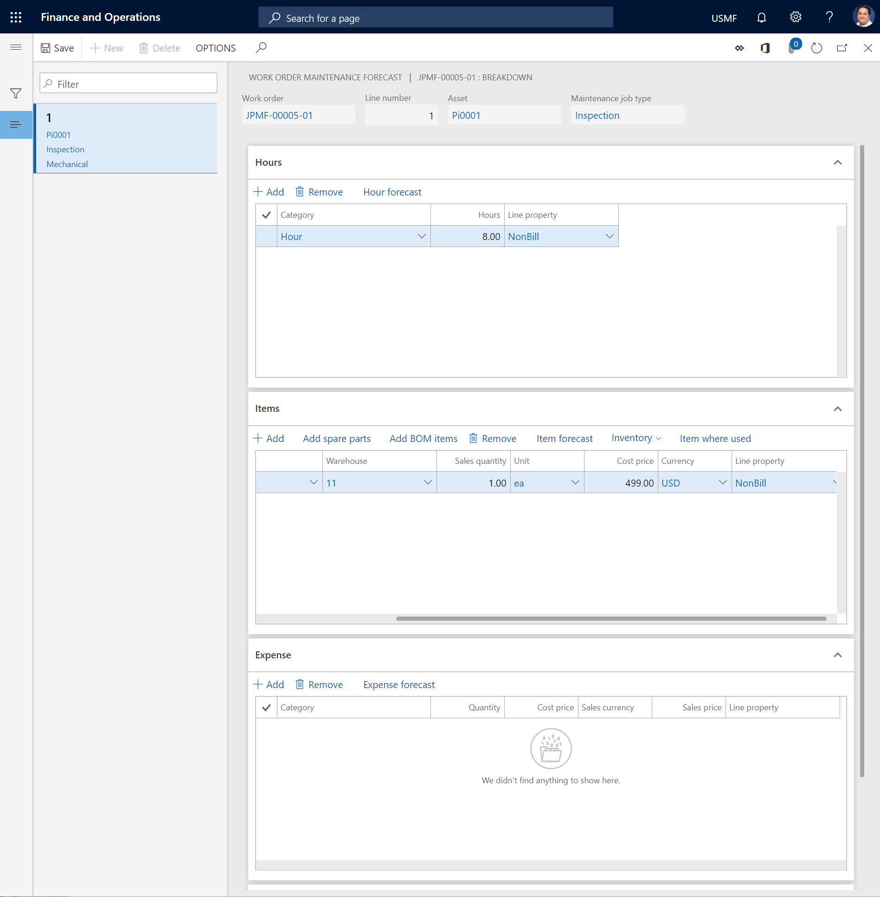
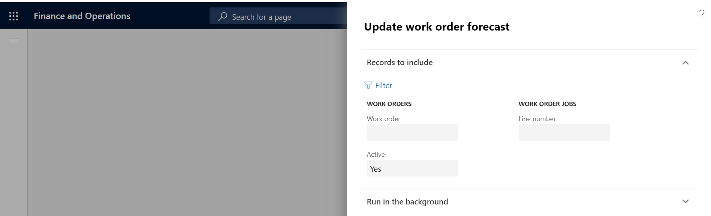

Wartungsprognose
Important
Dynamics 365 for Finance and Operations hat sich zu speziell entwickelten Anwendungen entwickelt, mit denen Sie bestimmte Geschäftsfunktionen verwalten können. Weitere Informationen zu diesen Änderungen finden Sie im Dynamics 365-Lizenzierungshandbuch.
Wenn Sie einen Arbeitsauftrag erstellen, erstellen Sie Arbeitsauftragseinzelvorgänge mit zugehörigen Anlagen und Wartungsauftragstypen. Wenn Sie einen Wartungsauftragstyp auswählen, der Wartungsprognosen enthält, werden die Prognosen automatisch in den Arbeitsauftrag übernommen.
Sie könnten Planungspositionen zu einem Arbeitsauftrag hinzufügen oder aus diesem löschen. Die Einrichtung des Arbeitsauftrags-Lebenszykluszustands, der zugehörige Projekttyp und die mit dem Projekttyp verbundenen Stufenregeln bestimmen, ob Sie Planungspositionen hinzufügen oder bearbeiten können. Weitere Informationen über Lebenszyklusstatus von Arbeitsaufträgen und zugehörigen Projektphasen finden Sie unter Planungen, Arbeitsaufträge und Projekte.
Wählen Sie Anlagenverwaltung > Allgemein > Arbeitsaufträge > Alle Arbeitsaufträge oder Aktive Arbeitsaufträge aus.
Wählen Sie den Arbeitsauftrag in der Liste aus, und wählen Sie dann im Aktivitätsbereich > auf der Registerkarte Arbeitsauftrag > in der Gruppe Projekt Planung aus. Auf der Seite Arbeitsauftragswartungsprognose werden Planungspositionen des Wartungsauftragstyps, der im Arbeitsauftragseinzelvorgang ausgewählt wurde, angezeigt.
Geplante Stunden einem Arbeitsauftrag hinzufügen
Wählen Sie auf der Seite Arbeitsauftrag – Wartungsprognose einen Arbeitsauftragseinzelvorgang zum Hinzufügen einer Planung aus.
Wählen Sie im Inforegister Stunden Hinzufügen aus, um eine neue Position zu erstellen.
Wählen Sie im Feld Kategorie eine Kategorie aus.
Geben Sie die Anzahl der geplanten Stunden im Feld Stunden ein.
Wählen Sie im Feld Abrechnungscode den Belastungstyp aus, der verwendet werden soll.
Artikelprognosen einem Arbeitsauftrag hinzufügen
Es gibt drei Möglichkeiten, einer Arbeitsauftragswartungsprognose Artikel hinzuzufügen. Sie können Positionen für Artikel (Ersatzteile) anlegen, die nicht in der Ersatzteilliste oder Anlagenstückliste enthalten sind, Ersatzteile aus der Liste der genehmigten Ersatzteile auswählen und Artikel aus der Anlagenstückliste auswählen.
Wählen Sie auf der Seite Arbeitsauftrag – Wartungsprognose einen Arbeitsauftragseinzelvorgang zum Hinzufügen einer Planung aus.
Fügen Sie auf dem Inforegister Artikel Artikel zur Wartungsprognose hinzu, indem Sie die geeignete Methode anwenden.
Befolgen Sie die folgenden Schritte, um eine Position für ein Ersatzteil zu erstellen, das nicht auf der Ersatzteilliste oder Anlagenstückliste ist.
- Wählen Sie Hinzufügen aus.
- Wählen Sie im Feld Artikelnummer den Artikel aus.
- Geben Sie im Feld Verkaufsmenge die Menge ein.
- Wählen Sie im Feld Einheit die Maßeinheit für die Menge aus.
- Geben Sie in den Feldern Einstandspreis und Währung entsprechende Werte ein.
- Wählen Sie im Feld Abrechnungscode einen Abrechnungscode aus.
- Um die in den Artikelpositionen angezeigte Liste mit den Dimensionen zu ändern, wählen Sie Inventar > Dimensionen anzeigen aus, wählen Sie die Dimensionen aus und legen Sie dann die Option Einstellungen speichern auf Ja fest.
Um ein Ersatzteil aus einer genehmigten Ersatzteilliste hinzuzufügen, führen Sie die folgenden Schritte aus:
- Wählen Sie Ersatzteile hinzufügen aus.
- Wählen Sie das Ersatzteil aus, und bearbeiten Sie die zugehörigen Informationen nach Bedarf.
- Wählen Sie OK.
Wenn Sie einen Artikel von der Anlagenstückliste hinzufügen möchten, führen Sie die folgenden Schritte aus:
- Wählen Sie Stücklistenartikel hinzufügen aus.
- Wählen Sie den Artikel aus, und bearbeiten Sie die zugehörigen Informationen nach Bedarf.
- Wählen Sie OK.
Um einen Überblick darüber zu erhalten, wo der Artikel in der ausgewählten Position verwendet wird in Bezug auf Anlagen, Standardwerte für Wartungsauftragstypen, Ersatzteile und Arbeitsaufträge in Anlagenmanagement, wählen Sie die Option Artikelverwendungsort aus. Weitere Informationen über diesen Überblick finden Sie unter Artikelverwendungsort.
Ausgabenprognosen einem Arbeitsauftrag hinzufügen
Wählen Sie auf der Seite Arbeitsauftrag – Wartungsprognose einen Arbeitsauftragseinzelvorgang zum Hinzufügen einer Planung aus.
Wählen Sie im Inforegister Ausgaben Hinzufügen aus, um eine Position zu erstellen.
Wählen Sie im Feld Kategorie eine Kategorie aus.
Geben Sie im Feld Menge die Menge ein.
Geben Sie in den Feldern Einstandspreis, Verkaufswährung und Verkaufspreis entsprechende Werte ein.
Wählen Sie im Feld Abrechnungscode den Belastungstyp aus, der verwendet werden soll.
Note
Auf dem Inforegister Wartungsprognose – Summen sehen Sie eine Übersicht über die Anzahl der auf jedem Inforegister angelegten Positionen, für den ausgewählten Arbeitsauftragseinzelvorgang und für den Arbeitsauftrag. Außerdem sehen Sie eine Summe der prognostizierten Arbeitsstunden für den Arbeitsauftragseinzelvorgang und für den Arbeitsauftrag.
Die folgende Abbildung zeigt ein Beispiel für die Seite Arbeitsauftrag – Wartungsprognose.

utomatische Aktualisierung von Arbeitsauftragsprognosen
Im Anlagenmanagement können Sie Änderungen an den Arbeitsauftragsprognosen für Stundenkosten, Artikelkosten und Ausgaben, die in anderen Modulen in Microsoft Dynamics 365 for Finance and Operations aktualisiert wurden, automatisch aktualisieren. Auf diese Weise wird sichergestellt, dass in Ihren Arbeitsauftragsprognosen immer die aktuellen Einstandspreise verwendet werden. Es ist auch möglich, ähnliche Aktualisierungen für Wartungsauftragstypprognosen vorzunehmen.
Wählen Sie Anlagenverwaltung > Periodisch > Planung > Arbeitsauftragsplanung aktualisieren aus.
Im Dialogfeld Arbeitsauftragsplanung aktualisieren auf dem Inforegister Einzuschließende Datensätze können Sie bei Bedarf Auswahlmöglichkeiten für bestimmte Arbeitsaufträge oder Arbeitsauftragseinzelvorgänge hinzufügen. Klicken Sie auf Filtern und treffen Sie die zutreffende Auswahl.
Im Inforegister Im Hintergrund ausführen können Sie die automatische Aktualisierung bei Bedarf als Batchauftrag einrichten.
Klicken Sie auf OK, um die Aktualisierung der Prognose zu starten.
Die folgende Abbildung zeigt ein Beispiel für das Dialogfeld Arbeitsauftragsplanung aktualisieren.
